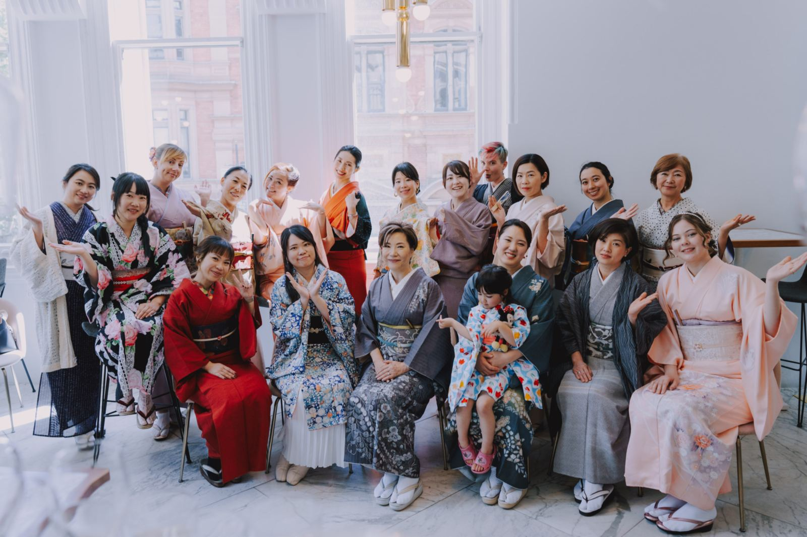
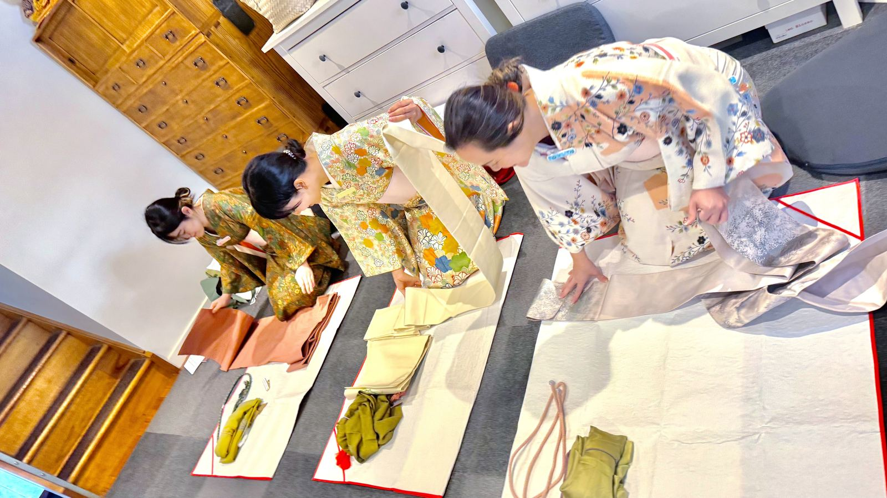

Film: “黒留軍団”, Kimono Australia at the Sydney Opera House
01
About me
Hi! My name is Kyoko.
My memory of wearing kimonos goes back to when I was a child.
Both my mother and grandmother wore kimonos everyday, they wore them while they cooked, cleaned, sewed, went to work… it was as much a part of their daily lives as jeans and shirts are a part of ours!
I remember the local kimono store would come to our house with rolls and rolls of beautiful silk kimono fabrics in tow. They displayed them all across our floor and my mother and all my aunties would fight over the ones they thought were the most beautiful. That is how my family’s collection was purchased and grew to what it is today… what a luxurious way to shop! Once they selected their favourites, each kimono was custom made to fit.
Kimonos for Japanese people aren’t just a garment, but a part of our broader traditions and heritage. They are usually passed down from mothers to daughters for many generations. I wore my mother’s kimono to my daughter’s graduation ceremony and it felt as if my mother was there with us. My daughter has also worn the kimono my mother made for me when I was a child to many special occasions. There are not only memories but also family histories behind each dress. Despite these traditions, it is important to me that kimonos don’t become a thing of the past. I encourage all people to wear them to keep their memories alive!
“I wore my mother’s kimono to my daughter’s graduation ceremony and it felt as if my mother was there with us.”
I founded Kimono Australia as the first overseas certified kimono dressing school certified by The Japan Tradition Technique Instructor Association (JTTI). JTTI has 44 certified kimono schools and private practices around Japan. My goal is to expand knowledge and awareness of Japanese culture through teaching kimono dressing.
Let me show you how to dress in kimono authentically but also the different ways to style and dress beautiful kimonos. They are there to be enjoyed by everyone, not only people with Japanese heritage. You will be amazed by how versatile the kimono is and how divine they can make you feel.
So come and join us at Kimono Australia, make new kimono friends, enjoy kimono outings, and most of all let’s just have fun and enjoy your kimono life!
Kyoko HodgkinsonKimono Grand Master Japan Tradition Technique Instructor Association Sydney – Kimono Australia
Certified JTTI kimono schools and private practices around Japan
5
Accredited courses, from Introductory to Grand Master
8weeks
To learn to dress yourself in the Introductory Course
Kimono Australia is the first overseas branch of Japan Tradition Technique Instructor Association (JTTI). JTTI has over 44 Kimono dressing schools throughout Japan and now you can enrol into JTTI courses here in Sydney. All completion and accredited qualification certificates come from JTTI Head office in Japan.

make new kimono friends·enjoy kimono outings·enjoy your kimono life·
“Make new kimono friends, enjoy kimono outings, and most of all let’s just have fun.”
02
Japan Tradition Technique Instructor Association Qualification Courses
From your first kimono to Grand Master.

Where would you like to start?
一Step 1
Introductory Course初等科
This is the best place to start your journey to learn the art of Japanese Kimono Dressing in an authentic way. Learn how to dress yourself in just 8 weeks.
Length
8 weeks
Course fee
$600
Includes
JTTI text book & Ishou jiki
You will learn not only kimono dressing skills but theory of kimono dressing, various obi ties, history, Kimono TPO, styling, coordinations and more!
This course is about enjoying your kimono! Learn how to dress yourself in kimono and basic obi ties. You will also learn about kimono TPO, ranking, obi types, origin of kimono and obi, current kimono trend etc. It’s a fun course to get started!
Once you have completed this course you will be able to progress to Intermediate course if you wish.
This course is about perfecting your self-styling and you will start learning the basics about how to dress in formal kimono dressing and learn different obi tying techniques.
Certificate
Wasoushi Level 2
Course fee
Please ask
You will receive an accreditation certificate of Wasoushi Level 2 at completion of this course.
This is where things get serious, additional to the skills you have learnt, you will master highly skilled obi tying methods and gain a deeper understanding of kimono dressing as an art.
Certificate
Jun Shihan
Course fee
Please ask
You will receive an accreditation certificate of Jun Shihan at completion of this course.
This is a teaching course. You will learn how to teach others the skills of dressing and you will be able to teach and open your own classes.
Certificate
Koutou Shihan
Course fee
Please ask
You will receive an accreditation certificate of Koutou Shihan at completion. By becoming a Koutou Shihan, you will also be able to become a member of the Japan Tradition Technique Association. Additionally you will be invited to their annual event for all professional masters.